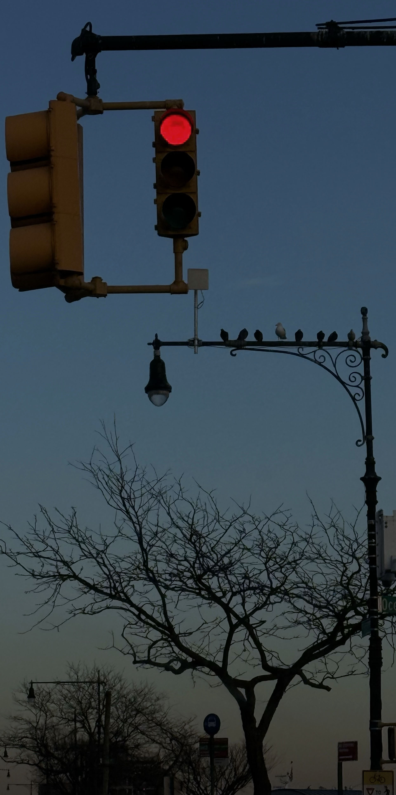
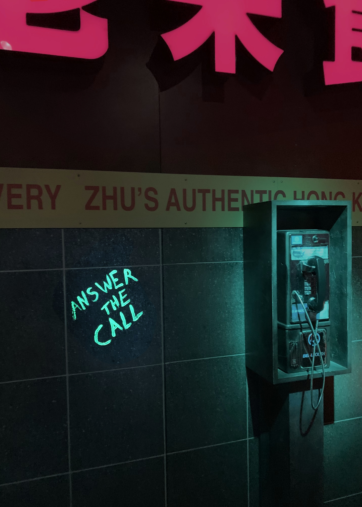

In this image, I focused on using composition and color to communicate a sense of pause and restraint. The subject matter, a red traffic light suspended against an open sky. I adjusted the tonal contrast using Curves to slightly deepen the shadows while maintaining soft highlights, keeping the image balanced and minimal. Cooler blue tones in the sky contrast with the red light, which becomes the primary visual focus without overwhelming the frame. Overall, the editing enhances the images calm yet tense atmosphere and reinforces the idea of being momentarily stopped in time.

In this photo, I wanted to create a moody and slightly dramatic atmosphere. The subject is a public phone, which already suggests ideas of communication, waiting, or being ignored. I placed the phone off to the side so there is empty space around it, making the scene feel more isolated. I increased the contrast using Curves and adjusted brightness to make the shadows darker while keeping the light on the phone visible. I also shifted the colors toward cooler green and blue tones to create a cold, distant feeling. The red sign at the top adds contrast and tension. These edits help emphasize the emotional tone and make the image feel more intentional and expressive.